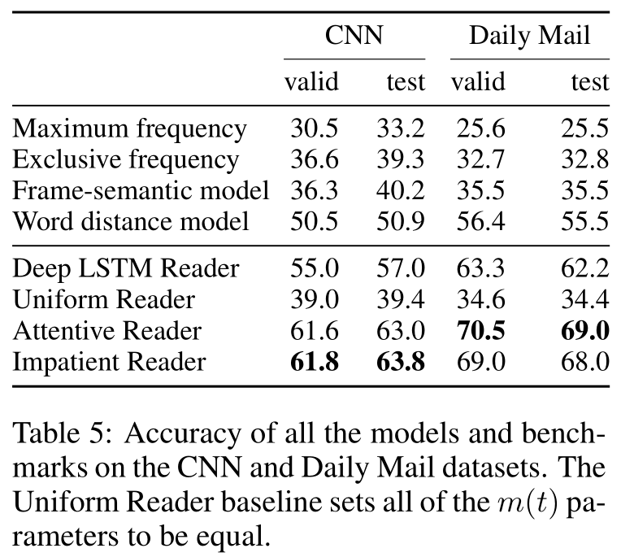
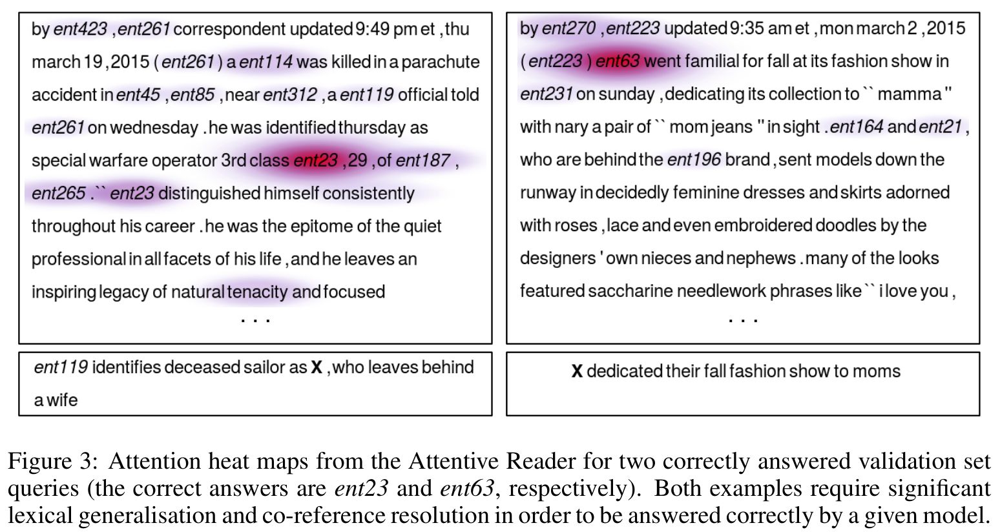

1. Empirical Evaluation
Having described a number of models in the previous section, we next evaluate these models on our reading comprehension corpora. Our hypothesis is that neural models should in principle be well suited for this task. However, we argued that simple recurrent models such as the LSTM probably have insufficient expressive power for solving tasks that require complex inference. We expect that the attention-based models would therefore outperform the pure LSTM-based approaches.
Considering the second dimension of our investigation, the comparison of traditional versus neural approaches to NLP, we do not have a strong prior favouring one approach over the other. While numerous publications in the past few years have demonstrated neural models outperforming classical methods, it remains unclear how much of that is a side-effect of the language modelling capabilities intrinsic to any neural model for NLP.
[info]
publication：出版物
side-effect：副作用
intrinsic：固有的
The entity anonymisation and permutation aspect of the task presented here may end up levelling the playing field in that regard, favouring models capable of dealing with syntax rather than just semantics.
[info]
syntax：语法的
semantics：语义的
With these considerations in mind, the experimental part of this paper is designed with a three-fold aim.
[info] three-fold：三重的
First, we want to establish the difficulty of our machine reading task by applying a wide range of models to it. Second, we compare the performance of parse-based methods versus that of neural models. Third, within the group of neural models examined, we want to determine what each component contributes to the end performance; that is, we want to analyse the extent to which an LSTM can solve this task, and to what extent various attention mechanisms impact performance.
[success] 实验的三个目的
（1）评价task的难度
（2）比较基于分析的方法和基于NN的方法的性能
（3）NN中使用的各种技术分别起到了什么作用
All model hyperparameters were tuned on the respective validation sets of the two corpora. 5 Our experimental results are in Table 5, with the Attentive and Impatient Readers performing best across both datasets.

Frame-semantic benchmark While the one frame-semantic model proposed in this paper is clearly a simplification of what could be achieved with annotations from an NLP pipeline, it does highlight the difficulty of the task when approached from a symbolic NLP perspective.
[warning]
annotations：注释
approached from：从。。。靠近
[?] 框架语义模型和symbolic NLP是什么关系？
Two issues stand out when analysing the results in detail. First, the frame-semantic pipeline has a poor degree of coverage with many relations not being picked up by our PropBank parser as they do not adhere to the default predicate-argument structure. This effect is exacerbated by the type of language used in the highlights that form the basis of our datasets.
[success]
exacerbate：使恶化
框架语言分析方法性能不好的原因1：
table 4的PropBank只能列举一部关系，很多不满足“predicate-argument”结构的关系无法列举出来。
[?] language used in the highlights是什么意思？
The second issue is that the frame-semantic approach does not trivially scale to situations where several sentences, and thus frames, are required to answer a query. This was true for the majority of queries in the dataset.
[success]
框架语言分析方法性能不好的原因1：
需要结合多个句子来回答问题的情况在这里不适用。
Word distance benchmark More surprising perhaps is the relatively strong performance of the word distance benchmark, particularly relative to the frame-semantic benchmark, which we had expected to perform better.
[success]
单词距离算法的性能优于框架语义算法。
Here, again, the nature of the datasets used can explain aspects of this result. Where the frame-semantic model suffered due to the language used in the highlights, the word distance model benefited. Particularly in the case of the Daily Mail dataset, highlights frequently have significant lexical overlap with passages in the accompanying article, which makes it easy for the word distance benchmark.
[warning]
lexical：语汇的
accompanying：附随的
单词距离算法优于框架语义算法的原因：受益于“the language used in the highlights”
[?] 什么是“the language used in the highlights”
For instance the query “Tom Hanks is friends with X’s manager, Scooter Brown” has the phrase “... turns out he is good friends with Scooter Brown, manager for Carly Rae Jepson” in the context. The word distance benchmark correctly aligns these two while the frame-semantic approach fails to pickup the friendship or management relations when parsing the query. We expect that on other types of machine reading data where questions rather than Cloze queries are used this particular model would perform significantly worse.
[warning]
用一个例子来说什么“单词距离算法优于框架语义算法的原因”，这个原因没看懂。
Neural models Within the group of neural models explored here, the results paint a clear picture with the Impatient and the Attentive Readers outperforming all other models. This is consistent with our hypothesis that attention is a key ingredient for machine reading and question answering due to the need to propagate information over long distances.
[success] 注意力机制很重要
The Deep LSTM Reader performs surprisingly well, once again demonstrating that this simple sequential architecture can do a reasonable job of learning to abstract long sequences, even when they are up to two thousand tokens in length. However this model does fail to match the performance of the attention based models, even though these only use single layer LSTMs. 6
[success] 没有注意力机制的纯LSTM也有很强的能力。
The poor results of the Uniform Reader support our hypothesis of the significance of the attention mechanism in the Attentive model’s performance as the only difference between these models is that the attention variables are ignored in the Uniform Reader. The precision@recall statistics in Figure 2 again highlight the strength of the attentive approach.
[warning] 这一段没看懂？前面似乎没有介绍Uniform Reader?
We can visualise the attention mechanism as a heatmap over a context document to gain further insight into the models’ performance.
[info] heatmap：热图
The highlighted words show which tokens in the document were attended to by the model. In addition we must also take into account that the vectors at each token integrate long range contextual information via the bidirectional LSTM encoders.
[success] contextual：语境的
Figure 3 depicts heat maps for two queries that were correctly answered by the Attentive Reader. 7 In both cases confidently arriving at the correct answer requires the model to perform both significant lexical generalsiation, e.g. ‘killed’ ! ‘deceased’, and co-reference or anaphora resolution, e.g. ‘ent119 was killed’ ! ‘he was identified.’ However it is also clear that the model is able to integrate these signals with rough heuristic indicators such as the proximity of query words to the candidate answer.
[info]
lexical generalsiation：词汇概括
anaphora resolution：回指分辨率
